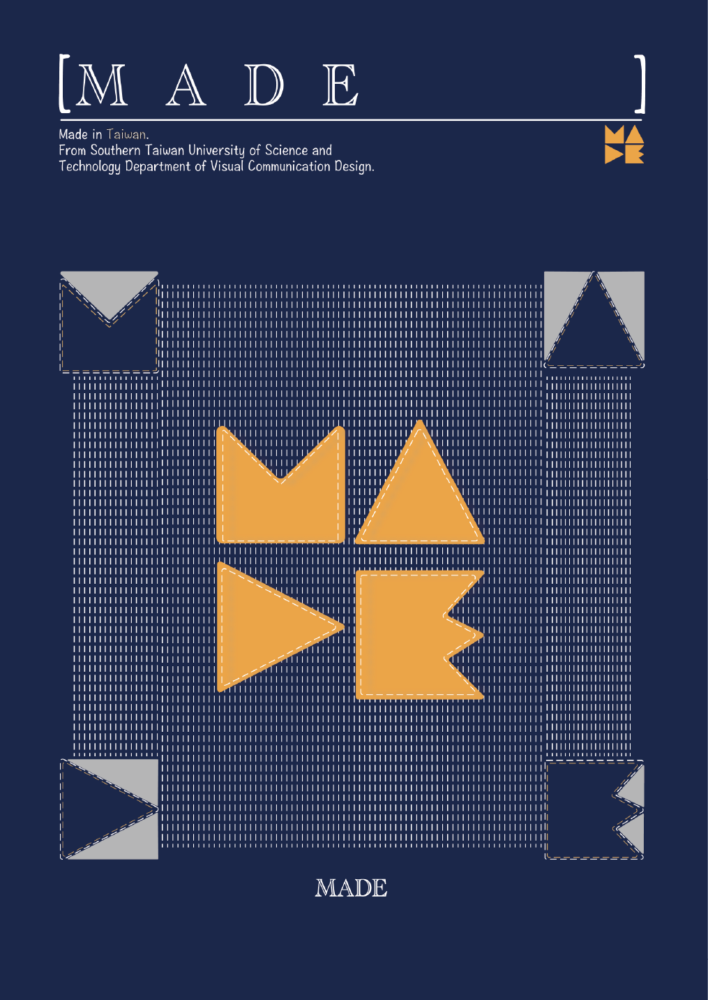
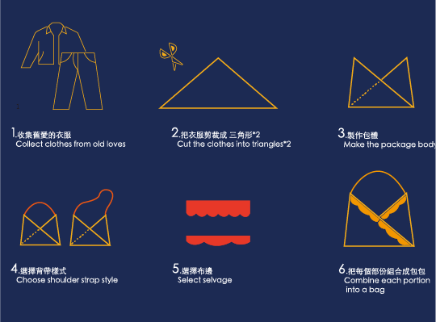
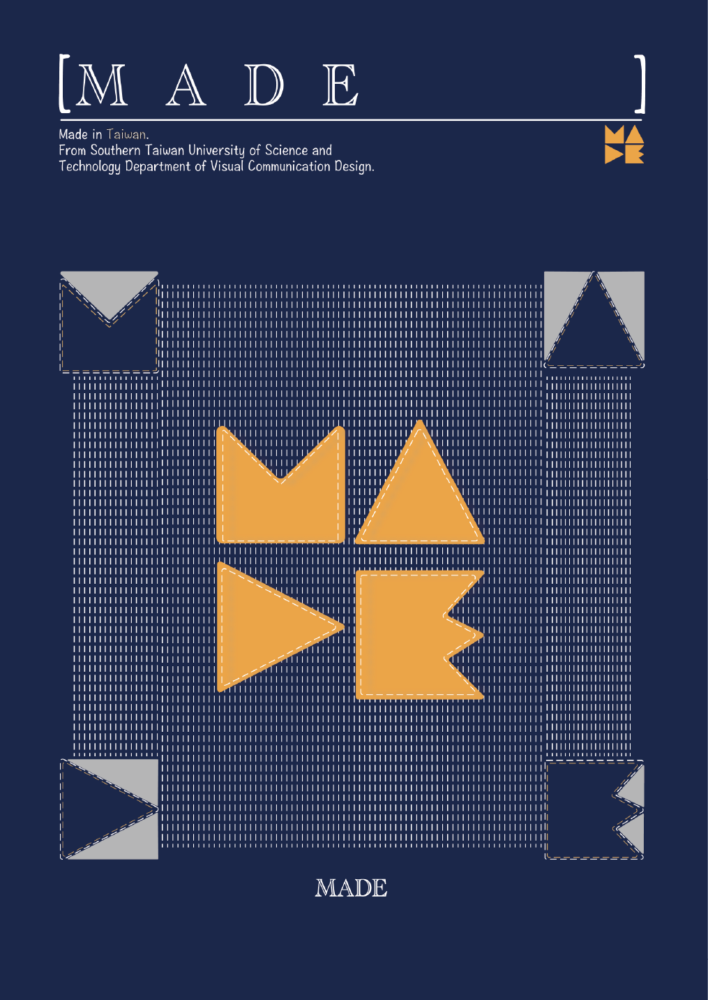
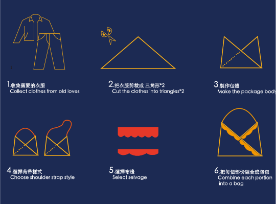

MADE
為了提升舊衣物的使用效益，我們透過重新設計和再製，將這些衣物變得新穎而有價值，並延長它們的使用壽命。我們計畫將這些衣物回收再製成包包，以減少浪費和不必要的消費。
由於快時尚使衣物淘汰速度超出應有的負荷，我們希望利用舊衣物回收的布料重新再製成包包，減少材料的消耗。同時，我們還希望增加東方文化的元素，利用衣襟的概念進行設計，並附加內袋以方便收納和攜帶，從而實現循環設計的效果。
To enhance the utility of old clothing, we utilize redesign and remanufacturing techniques to revitalize them, extending their lifespan and value. Our initiative aims to recycle these old garments into bags, reducing waste and unnecessary consumption.
Due to the excessive pace of fast fashion, which leads to premature garment disposal, we seek to repurpose old clothing fabrics into bags, thereby reducing material consumption. Additionally, we aim to incorporate elements of Eastern culture, utilizing the concept of garment collars in our design and adding inner pockets for convenient storage and transport, thus achieving the goal of circular design.
 
